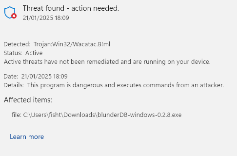
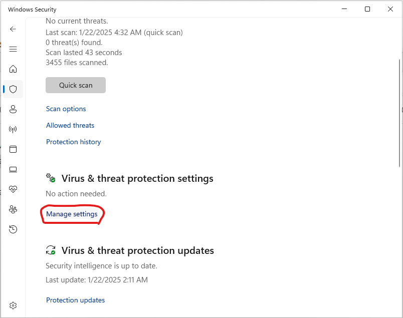
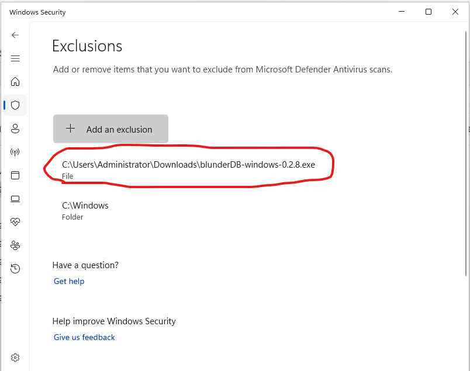

9. Windows-liite: blunderDB:n virheellinen tunnistus haittaohjelmaksi
Muista
Seuraava koskee Windows 10- ja 11-käyttöjärjestelmiä.
Windows edellyttää nykyään, että ohjelmistoja julkaisevat yritykset tai itsenäiset ohjelmistokehittäjät varmentavat sovelluksensa digitaalisesti tai jopa jakelevat ne Windows Storen kautta. Tällöin suositellaan kääntymään ulkopuolisten yritysten puoleen digitaalisen varmenteen hankkimiseksi, mikä maksaa useita satoja euroja (katso esimerkiksi https://learn.microsoft.com/en-us/archive/blogs/ie_fr/certificats-de-signature-de-code-ev-extended-validation-et-microsoft-smartscreen ).
Koska tarjoan blunderDB:n ilmaiseksi, en halua suuntautua näihin kalliisiin vaihtoehtoihin. Tämän vuoksi on hyvin todennäköistä, että Windows varoittaa sinua mahdollisesta vaarasta tai jopa estää blunderDB:n suorittamisen kokonaan. Seuraavissa osioissa selitetään, mitä toimenpiteitä on tehtävä Windowsin vastustelun ohittamiseksi.
9.1. Windows SmartScreen -varoitus
Kun suoritat blunderDB:n sen lataamisen jälkeen, Windows saattaa näyttää seuraavanlaisen varoituksen:

Jos haluat sallia tietyn SmartScreenin estämän suoritettavan tiedoston:
Yritä suorittaa suoritettava tiedosto:
Kun yrität käynnistää suoritettavan tiedoston, SmartScreen saattaa estää sen ja näyttää varoituksen.
Napsauta ”Lisätietoja”:
Napsauta SmartScreen-varoitusikkunassa Lisätietoja.
Valitse ”Suorita joka tapauksessa”:
Jos luotat suoritettavaan tiedostoon, napsauta Suorita joka tapauksessa ohittaaksesi SmartScreen-varoituksen tällä kerralla.
9.2. Windows Defenderin esto
Joissakin Windowsin suojausasetuksissa voi käydä niin, että SmartScreenin ohittamisesta huolimatta (katso edellinen osio) Windows Defender estää blunderDB:n suorittamisen seuraavanlaisilla viesteillä:

tai vielä:

tai jopa asettaa sen karanteeniin.
Windows Defenderin tiedetään aiheuttavan vääriä positiivisia tunnistuksia. Tämä ongelma mainitaan nimenomaisesti Golangin virallisen sivuston UKK:ssa ( https://go.dev/doc/faq#virus ) tai joidenkin Go-kielellä ohjelmoitujen projektien GitHub-tiketeissä ( https://github.com/golang/vscode-go/issues/3182 ).
Jos haluat estää Windowsin suojausta tarkistamasta blunderDB:tä:
Avaa Windowsin suojaus:
Mene Käynnistä-valikkoon ja kirjoita Windowsin suojaus.

Siirry kohtaan ”Virus- ja uhkien suojaus”:
Napsauta Virus- ja uhkien suojaus.

Hallinnoi asetuksia:
Vieritä alaspäin ja napsauta Hallinnoi asetuksia kohdassa Virus- ja uhkien suojauksen asetukset.

Lisää tai poista poikkeuksia:
Vieritä Poikkeukset-osioon ja napsauta Lisää tai poista poikkeuksia.

Lisää poikkeus:
Napsauta Lisää poikkeus ja valitse Tiedosto. Siirry sitten suoritettavaan tiedostoon, jonka haluat sulkea pois, ja valitse se.


